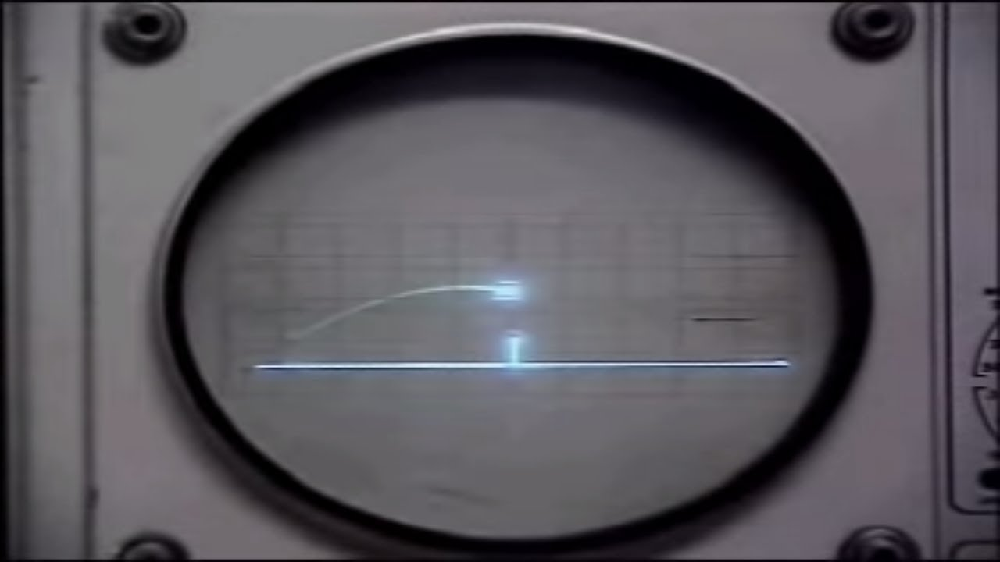

Video games in the 1950s felt more like a novelty rather than the common thing of nowadays, as technology was rather primitive around this time.
Yet despite that, there was an earnest attempt at making the first ever video game. With that resulting in "Tennis For Two", made by William Highinbotham and Robert V. Dvorak.
It was made in about three weeks and was utilized for display at the Brookhaven National Laboratory's annual public exhibition for about three days, with it receiving a ton of attention (especially with high schoolers)>